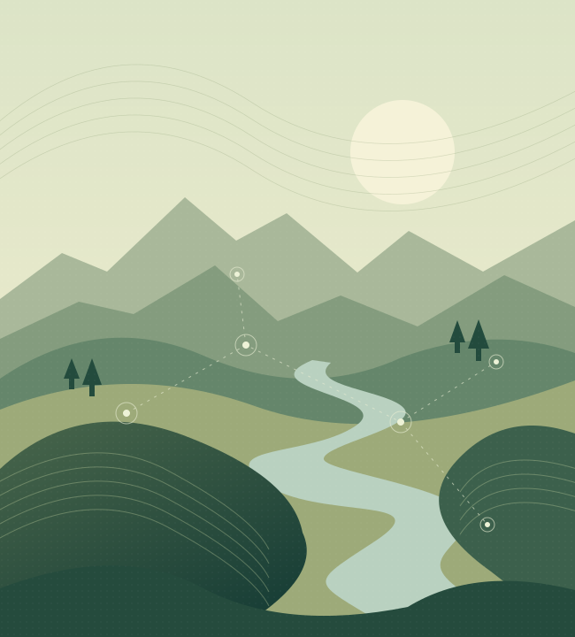

Communities
Understand population exposure and bring local priorities into the assessment of risk.
COMMUNITY WORKSHOP · RICHMOND, VIRGINIA
New risk analytics and tools. Your local knowledge. Shared community action.
Connecting people and science to better understand the range of hazards facing our communities.

THE WORKSHOP
We’re building new multi-hazard analytics for Virginia. Help us prepare for an uncertain future.
Join community representatives, planners, emergency managers, government decision-makers and researchers to explore multi-hazard risk across the Commonwealth. Help shape what useful risk information looks like.
Our research connects multi-hazard modeling with the places people live and the systems we all rely on. We have already been developing multi-hazard analytics and tools in 2026. The workshop builds on that work. Your experience and insight will help us refine the questions these tools address, interpret the findings, and finally connect them to real planning decisions.
Bring your perspectiveWE HAVE A CONNECTED VIEW OF RISK
We look across risks to better understand where communities may be most vulnerable, given our shared dependence on the built environment and critical infrastructure.
Understand population exposure and bring local priorities into the assessment of risk.
Connect hazard information with buildings and places to support more informed resilience planning.
Explore the exposure of essential systems, including the energy networks communities depend on.
Potential hazard areas Flooding / Hurricanes / Space weather / Other natural hazards Priorities will be shaped with community partners.
SCIENCE, SHAPED TOGETHER
Work on steps 1 and 2 is already underway in 2026. The workshop builds on this foundation, with a focus on steps 3 and 4: interpreting the analytics together using local knowledge and practical experience, and identifying priorities for next steps.
Identify the hazards, places, and planning questions that matter to Virginia communities.
Bring hazard models together with population, infrastructure, and building data.
Explore the analytics through discussion, local context, and practical experience.
Identify resilience priorities and opportunities for continued collaboration.
ROOM FOR YOUR PERSPECTIVE
We welcome perspectives from across Virginia: community and nonprofit organizations, local and regional planning, emergency management, energy and infrastructure, and hazard research.
No single discipline sees the whole picture. Together, we can make the analysis more useful.
PLAN YOUR VISIT
Meet us in the Robins Room at Lewis Ginter Botanical Garden in the Richmond area.
The detailed agenda is being developed with community partners. Planned activities include:
Session timings, speakers, and participant logistics will be shared as planning progresses.
LET’S BUILD UNDERSTANDING, TOGETHER
Tell Alice Fox about yourself and your interest in attending. Complete this form to prepare an email request.